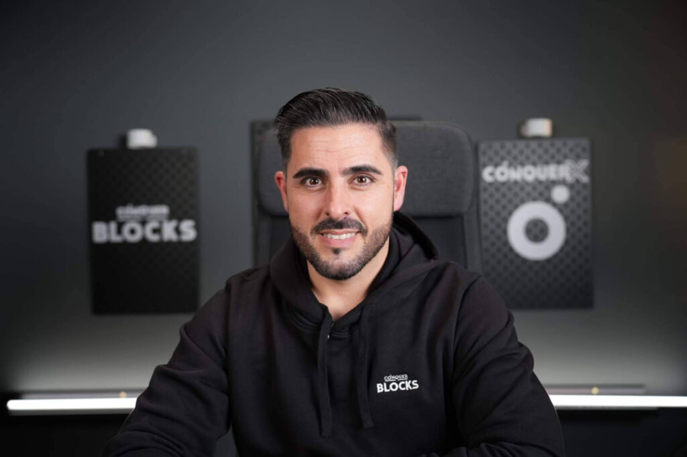

Juan Pérez - CEO & Fundador
Ingeniero de Software con más de 10 años de experiencia liderando equipos técnicos en startups.

En ConquerBlocks creemos en la educación accesible y de calidad. Nacimos con la idea de democratizar el conocimiento tecnológico y ayudar a miles de personas a mejorar sus oportunidades profesionales a través del desarrollo de software.
Ingeniero de Software con más de 10 años de experiencia liderando equipos técnicos en startups.

Especialista en Frontend y apasionada por la accesibilidad web y el diseño de interfaces.